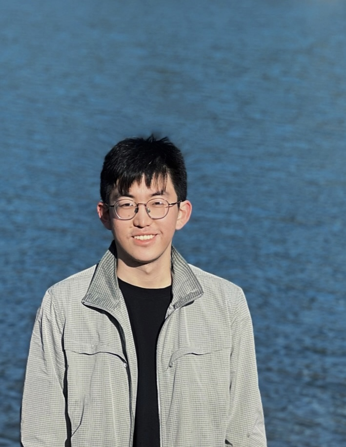

Pu (Luke) Yi 易普

Contact
Email / Google Scholar / Twitter / CV
Short Bio
I am a Ph.D. candidate in computer science at Stanford University, advised by Prof. Sara Achour. My current research interests are developing computing systems for novel/unconventional computing paradigms which specially target edge scenarios and emerging hardware. There are a range of emerging hardware technologies that bring benefits such as ultra low power, wearable, non-volatility, higher storage density over conventional hardware technologies. They have different computational primitives and are often prone to noise. To release their full potential, I am interested in designing custom software that is error resilient and has data encodings better matched to the hardware primitives. I like to work in the intersection of theory and practices and have a general interest in programming languages, formal methods, and software engineering.
I obtained my B.S. (summa cum laude) in computer science from Turing Class, Peking University, China. My undergraduate research focused on software testing, under the supervision of Prof. Darko Marinov and Prof. Tao Xie.
Selected Publications
-
Pu (Luke) Yi, Yifan Yang, Chae Young Lee, and Sara Achour
Early Termination for Hyperdimensional Computing Using Inferential Statistics
30th International Conference on Architectural Support for Programming Languages and Operating Systems
(ASPLOS 2025), pages 342-360, Rotterdam, The Netherlands, March 2025
[PDF] [slides]
-
Anjiang Wei, Akash Levy, Pu (Luke) Yi, Robert M Radway, Priyanka Raina, Subhasish Mitra, and Sara Achour
PBA: Percentile-Based Level Allocation for Multiple-Bits-Per-Cell RRAM
42nd IEEE/ACM International Conference on Computer Aided Design
(ICCAD 2023), pages 1-9, San Francisco, CA, USC, October 2023
[PDF]
-
Pu (Luke) Yi and Sara Achour
Hardware-Aware Static Optimization of Hyperdimensional Computations
38th ACM SIGPLAN International Conference on Object-Oriented Programming, Systems, Languages, and Applications
(OOPSLA 2023), pages 1-30, Cascais, Portugal, October 2023
[PDF] [slides]
-
Pu Yi, Hao Wang, Tao Xie, Darko Marinov, and Wing Lam
A Theoretical Analysis of Random Regression Test Prioritization
28th International Conference on Tools and Algorithms for the Construction and Analysis of Systems
(TACAS 2022), pages 217-235, Munich, Germany, April 2022
[PDF] [slides]
-
Pu Yi, Anjiang Wei, Wing Lam, Tao Xie, and Darko Marinov
Finding Polluter Tests Using Java PathFinder
ACM SIGSOFT Software Engineering Notes 46, 2021
(SEN 2021), 46(3), pages 37-41, July 2021
(Extended paper of abstract presented at Java PathFinder Online Day (JPF 2020), Virtual Workshop, November 2020)
[PDF]
-
Anjiang Wei, Pu Yi, Tao Xie, Darko Marinov, and Wing Lam
Probabilistic and Systematic Coverage of Consecutive Test-Method Pairs for Detecting Order-Dependent Flaky Tests
27th International Conference on Tools and Algorithms for the Construction and Analysis of Systems
(TACAS 2021), pages 270-287, Virtual Conference, March 2021
[PDF] [slides]
Miscellaneous
The two characters of my Chinese name mean literally simple (易) and normal (普) respectively.
I participated in programming contests (Olympiad in Informatics in China) in my high school and have been active in the community through my undergrad. I served as the president of the Peking University Student Algorithm Association (PKUSAA) for a year, where we organized the biggest programming contests in PKU. I also help train high school students for programming contests from time to time.
I learn different languages as a hobby (native Mandarin, proficient English, conversant German and Cantonese, beginner Japanese). Let me know if you are interested to be a language partner with me!